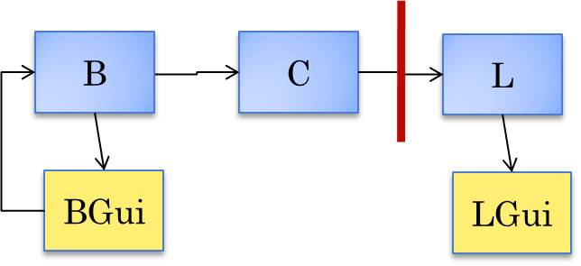
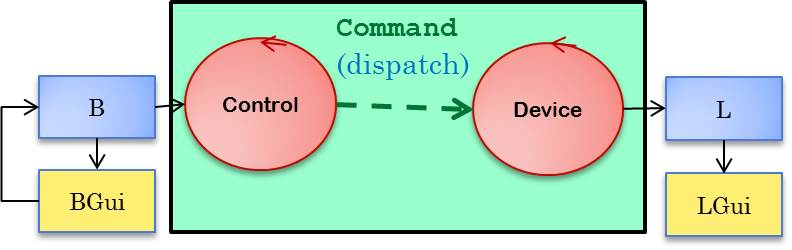
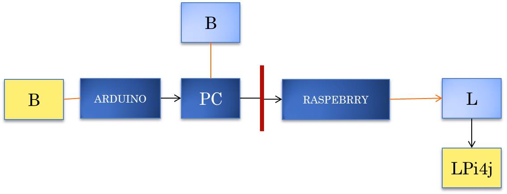

The initial oo prototype

The intial oo prototype allows us to distribute the system by
simply changing som device implementation (proxy pattern).
The framework for rapid prototyping

Evolving from the initial oo project

This architecture works but seems rather redundant and 'innatural'.
Beyond object-oriented
From procedure-call to message-passing
An alternatuve way could be that of 'cutting' some procedure call and to introduce
message passing:


Conceptually, the control is related to the button.
Starting from active objects (actors)
The basic components of a distributed systems are better expressed as
active objects (
actors).

The conventional objects (of the domain model) now come into existence
and work 'within' the actors.
For example, the project  it.unibo.buttonLedSystem.akka redefines the system components as follows:
it.unibo.buttonLedSystem.akka redefines the system components as follows:
and provides tha following main programs:
BLSAkkaMain,
BLSAkkaRaspMain
System specification in a custom lanaguage (metamodel)

See the project it.unibo.buttonLedSystem.basic.qa e la specifica di un modello della analisi:
blsAnalysis.qa
Pyhiscal

Deliverable
Requirements: STEP1 0
Realizzare il BCLS con un button-GUI su pc e un led su Raspberry o su Arduino
Requirements: STEP1 1
L'utente dispone (attraverso un PC convenzionale o altro device di una CONSOLE
di comando con un pulsante START. Alla pressione del pulsante START il sistema
deve effettuare per un tempo predeterminato TLIMIT il BLINK di un LED connesso a un RasperryPi
o ad Arduino.
Requirements: STEP1 2
Si richiede di realizarne una nuova versione del sistema
in cui la CONSOLE presenti un ulteriore pulsante STOP.
La pressione del pulsante STOP (prima dell'intervallo TLIMIT) da parte dell'utente
deve produrre la terminazione del blinking del LED.
GOAL
L'obiettivo e' effettuare l'analisi del problema alla luce
dell'ultimo product disponibile e quindi:
definere il nuovo product backlog
stimare (in termini di SPRINT di 1 giorno)
in tempo necessario per pervenire al 'DONE' della nuova versione del sistema.
VISION
1) lo SPRINT Planning e il product backlog e' bene avvengano DOPO
la definizione della architettura logica del sistema.
2) la fase di SPRINT Retrospective potrebbe condurre a una revisione radicale
del processo di produzione.
Ad esempio
si potrebbe valutare l'ooportunita' di costruire una
Software Factory con cui generare in modo automatico il layer software
di raccordo a una opportuna parte infrastrutturale resa disponibile a priori
in forma di libreria.